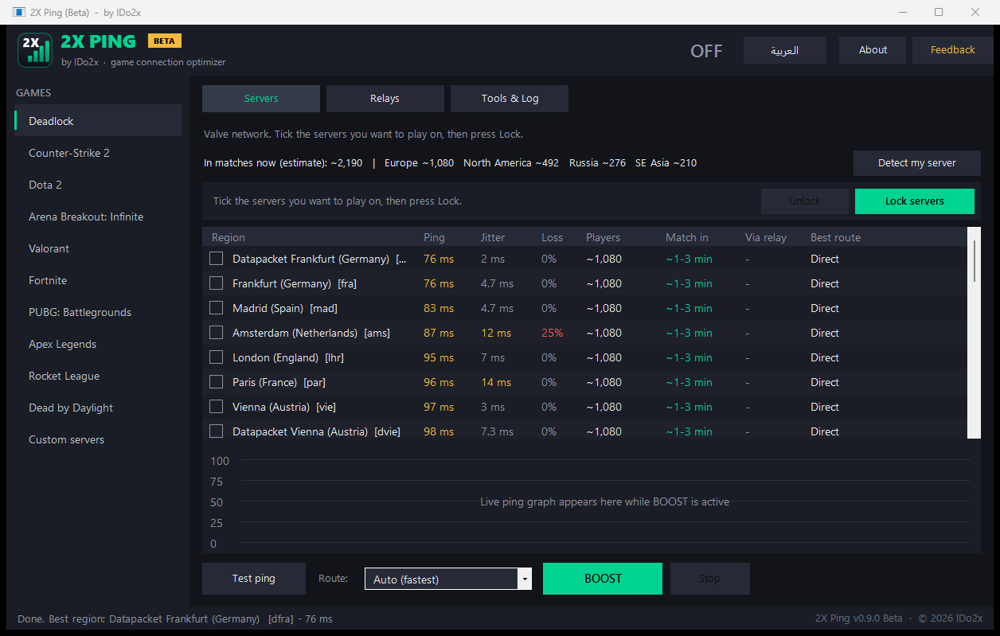

Choose your Deadlock server region
2X Ping measures your ping to every Deadlock region and locks matchmaking to the ones you choose.

How it works
Ping to every region
Tests all Deadlock regions in two to three seconds, with the expected queue time and player count for each.
Region lock
Pick one or more regions. The rest are blocked in Windows Firewall, so matchmaking can only place you in yours.
Route-aware
Knows where you enter Valve's network (for example via Dubai) and shows the ping you'll get before you lock.
Match check
During a match it tells you which region you're playing in and whether it's one you chose.
Nothing changed in the game
No game files are modified and no game memory is read. Unlock, or close the app, and everything is back as it was.
Lightweight
No installer. While idle it uses about 56 KB of data an hour.
Lock your Deadlock region
- Download the latest version from Releases, extract it and run
2XPing.exe. It asks for administrator rights because the lock uses Windows Firewall. - The app tests every region. Green is under 60 ms.
- Tick the regions you want and press Play in ....
- Restart Deadlock and queue. Press Unlock when you're done.
FAQ
Can I get banned for using 2X Ping?
2X Ping doesn't touch the game: it doesn't modify game files, read game memory or inject anything. It only adds Windows Firewall rules that block the regions you didn't choose, the same thing you could do by hand in Windows settings. We can't guarantee how a game's anti-cheat will treat it, so use it at your own discretion.
Does 2X Ping change game files?
No. It doesn't modify game files or read game memory. The lock is a set of Windows Firewall rules that are removed when you press Unlock or close the app.
Will it lower my ping?
It can't make your connection faster. It keeps you on the regions where your ping is lowest and shows the ping to expect before you lock.
Why does Windows warn me when I open it?
The app isn't code-signed yet; signing is being set up (see the Code signing policy). On the blue SmartScreen warning, click More info, then Run anyway.
What does it send?
During the beta it shares usage and performance information, such as ping results and errors, and you can make it anonymous in Settings. The full list is in the privacy details.
Is it free?
Yes, free and open source under the MIT licence.
Uninstall
- Press Unlock (or Settings > Back to normal) to remove the firewall rules and any relay tunnel. Closing the app does this too.
- Close 2X Ping and delete its folder. There is no installer, so nothing else needs removing.
- Optional: delete
%APPDATA%\2XPingto remove its settings and logs.